Trigonometry
Graphing Trigonometric Functions
The functions and
will appear on Cartesian
system plots as wavy lines, that is, lines oscillating up and down in a
horizontal direction.
The figure below shows the both functions plotted twice. The y =
sin x function is the red oscillating line, and the
y = cos x is the blue oscillating line.
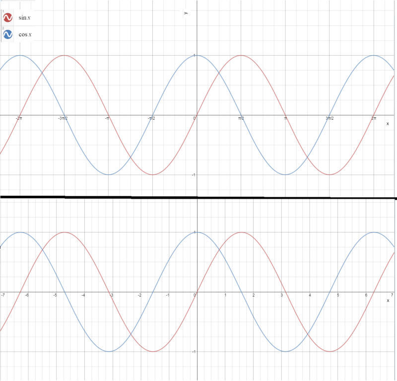
The upper plot differs from the lower one only in the labeling of the
horizontal x-axis. In the upper one, the x-axis is stepped by
increments of π/2:
−2π, −3π/2, −π, −π/2,
0, π2, π 3π/2, and 2π.
is the interval of the domain shown.
In the lower plot, the stepping of the x-axis is by 1: −7, −6,
..., 6, 7, as you might see with any plot.
The plots show up drawn the same because π/2 = 1.57 (approximately) and so the
upper plot is really stepped at intervals of 1.57. The reason it is better to
show the upper plot is because the roots—that is, where the plot
line crosses the x-axis whenever y = 0—of sin and cos
functions are at multiples of nπ and (2n + 1)π/2, respectively,
where n is an integer, negative, zero, or positive.
For y = sin x, y = 0 when x = ..., −4π, −3π,
−2π, −π, 0, π, 2π, 3π, 4π, ...
Note that this is for when n = ..., −4, −3, −2, −1,
0, 1, 2, 3, 4, ...
For y = cos x, y = 0 when x = ..., −7π/2, −5π/2,
−3π/2, −π/2, 0, π/2, 3π/2, 5π/2, 7π/2, ...
This too is for when n = ..., −4, −3, −2, −1,
0, 1, 2, 3, 4, ...
Examining Sine & Cosine Functions
Look at the equations below:
- y = D + A sin (Bx + C)
- y = D + A cos (Bx + C)
The most important thing you can do in parsing sin and cos functions is to parse
them using this format, assigning values to A, B, C, and
D.
Consider the simple equation y = sin x. What values from A to
D will produce that equation? What about A = 1, B = 1,
C = 0, and D = 0? Let's plug them in:
Note that the implied × signs are show, but that is the format. So when
that is simplified, it looks exactly like:
Understand this well before proceeding. Now let's try a tougher one: what
is A, B, C, and D for the following?
Look carefully at the format
- A is a number that is multiplied to but outside of the sin and cos function
- B is basically any coefficent of x inside the trig function, and a
coefficient is multiplied to the variable
- C is summed to the Bx value and must be within the trig function
(inside the parentheses)
- D is summed to the trig function and any factor A it is multiplied to
In looking at the function, there are no parentheses in the cos function, and
so this is a clue that C = 0. There is a coefficient to the cos function
variable, and it is 2, so B = 2. A number is multiplied to the trig
function, and so that number must be A, so A = 3. There is no
number summed or subtracted, so D = 0. Thus, if A through D is a set,
the values of the set are { 3, 2, 0, 0 }.
Let's make this more challenging. Find values A through D of the following:
The important thing in parsing this equation to fit the format is to be careful
of the minus signs!!!
When you see , you are also seeing
, and when you see
, you are seeing
where you must make sure that you take the coefficient of x as the
−n factor and not just n.
So the best way to parse that equation is by bracketing out A through
D.
Look at what was done:
- All multiplications by a negative value were bracketed out. This is done
to get values A and B
- All subtractions were converted to additions with negative numbers! This
was done to get values C and D
That last point is particularly vital, because the format involving A through D
shows additions of values (summations)!
Also do not get followed by commutative operations in parsing the format.
C might come before Bx, and D might be the last term of the
addition with A sin/cos (Bx + C), rather than the first.
Try this:
Bracket out the format:
These are the things to note in bracketing it out:
- D was coincidentally in place and a positive number
- A was adjusted to be the sum of a negative factor in the product with the
trig function, and it is the negative of the difference of an unknown number
subtracted by 2, which then becomes 2 subtracted by the number.
- C was actually the first term in the trig function containing an
addition/subtraction operation.
- B was carefully re-written to get the coefficient with its minus sign.
Values for B, C, and D, are absolutely known numbers, but value A
Let's do one more:
Let's try to think through the logic in step by step way:
- Find B: it will inside the sine or cosine function, and be the number or
quantity (set of numbers grouped in parentheses) multiplied to
x. The only thing multiplied to x is ln 2, so it must
be true that B = ln 2.
- Find C: it will be the number or the quantity
terms that are inside the trig function but not multiplied to Bx.
That corresponds to the
- Find A: it will be the number or the quantity multiplied
to the sine or cosine function, outside of it. Indeed there is a quantity,
, that is multiplied to the cos (Bx + C)
- Now find D: It should identified as summed to the
A cos (Bx + C) format. And that corresponds to
.
What Do A, B, C, and D Really Mean?
These parameters will become apparent in how they affect the plotting of
the sine and cosine functions.
These parameters will be related to important features of a sinusoidal (sine
or cosine) wave. These will be the amplitude, period, offset, and phase
shifting of the wave.
Amplitude
Parameter A affects the amplitude of the wave. In fact,
Study the plots below to see what affect A has on the amplitude of the sin x
function.
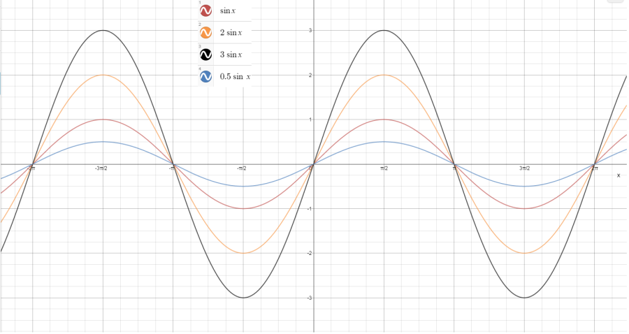
Note that the red plot is when A = 1, which is y = sin x.
The wave oscillates from a maximum of y = +1 to a minimum of
y = −1 along the x-axis. The amplitude is thus 1.
When A = 2 (the purple plot), the oscillation is from y = +2
to y = −2. The amplitude about the symmetrical axis of the sinusoidal
wave is thus 2.
What happens in the negative of A, that is when A < 0?
Study the figure below.
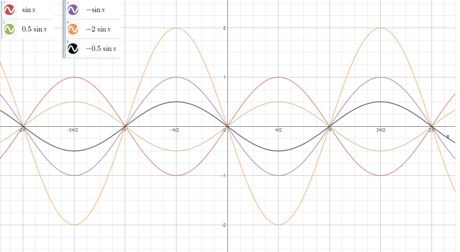
The purple, orange and black plot lines are for A = −1, −2,
and −0.5. The plots for A = +1 (red) and A = 0.5 (green)
are included for comparison. It is clear with the negative that the wave
just starts oscillating from point (0,0) on the other (negative) side of the
x-axis.
Let's take a look at the cosine and its negative and compare to sine and its
negative. Study the figure below.
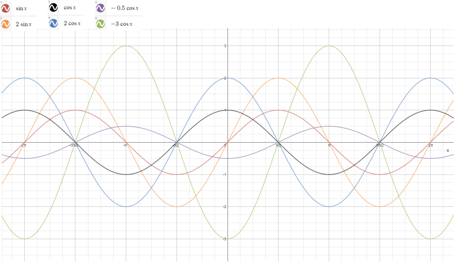
There are a lot of plots there, but focus on starting from the x = 0
point (which is the y-axis). All sin x start from (0, 0), and
it is clear that this is true with the y = sin x (red) and
y = 2 sin x (orange) plots.
y = cos x begins with (0, 1) (black), and y = 2 cos x
starts at (0, 2). These two plots always show −1 ≤ y ≤ +1 for
A = 1 and −2 ≤ y ≤ +2 for A = 2.
What about the two plots for A < 0, namely y = −0.5 cos x
(purple) and y = −3 cos x (green). These start at
(0, −0.5) and (0, −3), respectively.
The amplitude is always a positive number. It is the absolute value of
A, whether A is positive or negative, because an amplitude represents how
much deviation (the magnitude) there is from the axis of oscillation, and this
is inherently a positive number. See the figure below.
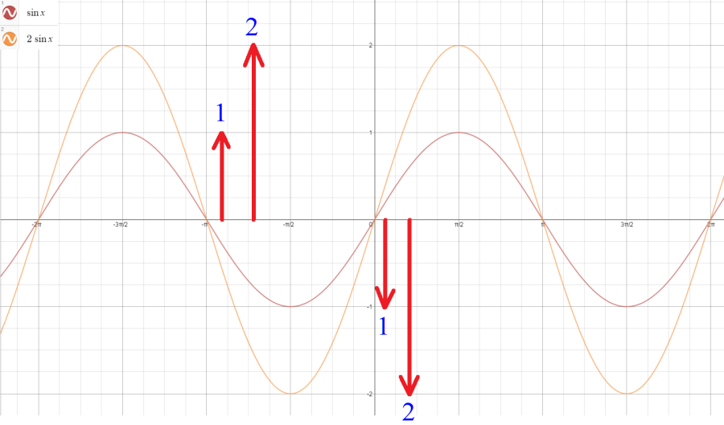
Period of The Sine & Cosine Functions
The period of a sinusoidal wave is the distance along the axis of
oscillation (the x-axis) that it takes for the wave to oscillate
with one positive and one negative deviation. Another way of looking it is
that it is distance from one crest of a wave to another.
Let's look at the figure below
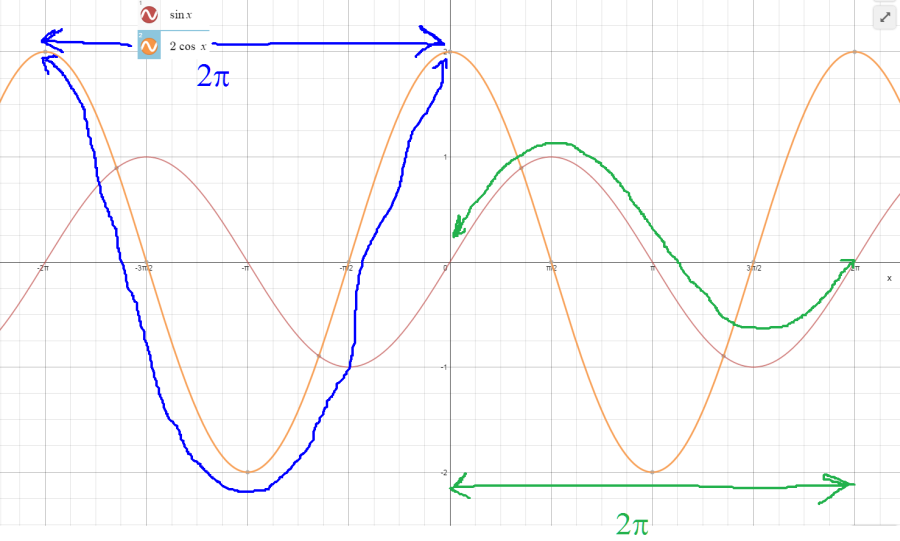
The y = sin x plot (red) is shown and the green-colored penciling shows
how the wave oscillates first positively and then negatively to return to
the axis of oscillation (x-axis). This represents one period, and the
points from (0, 0) to (2π, 0) determine the period, which is the length
along the x-axis. Thus the period is 2π - 0 = 2π.
Let's look at the other function y = 2 cos x (orange). The blue-colored
penciling will show the wave crest-to-wave crest method of determining
the period. So from coordinate (−2π, 2) to (0, 2), the difference
between the x-coordinates is 0 − −2π = 2π. Note that the
period is always a positive value.
So what is it that determines the period of oscillation in a sine or cosine
function? Let's look at some more plots. Study the figure below.
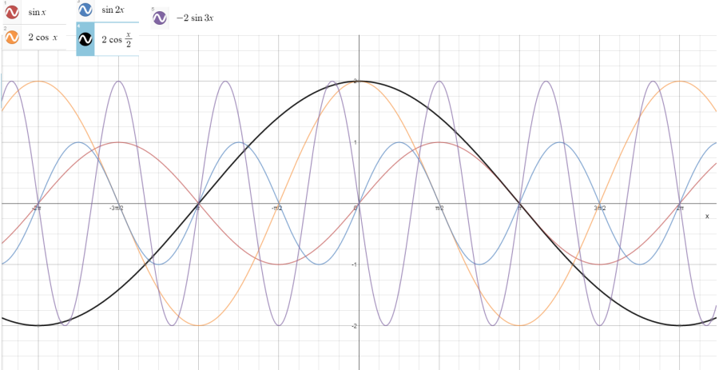
The red and the orange plots are the sine and cosine functions from the previous
figure. The only thing added are three new plots:
- y = sin 2x (blue)
- y = 2 cos ½x (black)
- y = −2 sin 3x (purple)
Compare the blue line to the red line (y = sin x). The period
of the blue line is clearly shorter, and can be computed to be π using the
method mentioned above. The amplitudes are the same, which is what we expect
from the A values. We changed the B values!
Compare the black line to the orange line (y = 2 cos x). We did
not change the A values again, and both amplitudes are the same. But the
period on the black line is longer. We have to a do a crest-to-crest determination
of the period (both bottom crests are seen), and it goes from −2π to
2π on the x-axis, so the difference is 2π − (−2π) =
4π, so that is the period. Note that the difference between the black and
orange line is the B value.
Finally let's compare the purple line (a sine function) to the orange line
again. From (0,0) to (π,0), the purple line makes two negative and one
positive deviation, which actually represents one-and-a-half periods. So if
π = (3/2) periods, then (2/3)π = one period, and that appears to be
about right. Again, the difference in the purple and orange lines is the
B value.
So what is going on here? In all these changes in the period of the plot, the
change happened because of the change in the B value. Okay, so let's
make a table to see what is causing these changes in the B value:
| B | Period (P)
|
|---|
| 1 | 2π
|
| ½ (0.5) | 4π
|
| 2 | π
|
| 3 | 2π/3
|
What equation relates B to P? When trying to create a relationship
which is an equation, first ask, does B increase with P?
If so, then start with the equation B = kP + m,
where k is a factor that will determine the proportion of increase and
m may relate to an offset of some kind. If B goes down (or up)
while P goes up (or down), then it is an inverse relationship, and you
start with the equation B = k/P + m.
When you look at the table, as B goes up, P decreases, so there
is an inverse relationship. Let's assume there is no offset for the moment:
(m = 0). So we have B = k/P. To find k, we do the
algebra of multiplying P both sides and BP = i. Plug
in B = 1 and P = 2π. Therefore k = 2π.
So let's verify the relationship of B = 2π / P. When
B = 0.5, then P = 2π / 0.5 = 4π. Good. When
B = 2, then P = 2π / 2 = π. Good.
When B = 3, then P = 2π/3. Good, more agreement with the table.
We now know how B relates to the period. If you have determined the value
of B, you can then determine the value of the period:
If you know the value of the period, you can determine the value of B
Note that a wave cycle, or period of the wave, has five important points,
and the x-axis value occurs at x-coordinate nP/4 along the period,
for n = 0, 1, 2, 3 and 4. The table shown below shows the importance of
the points in the period
| n | nP/4 |
|
|---|
| 0 | 0
| start of the period, with no deviation from axis of
oscillation
|
| 1 | P/4
| one-fourth into the period, with maximum deviation to the
amplitude (|A|) from horizontal axis of oscillation
|
| 2 | P/2
| halfway into the period, with a return to the axis of
oscillation
|
| 3 | 3P/4
| three-fourths into the period, with maximum deviation to
the other side of the horizontal axis of oscillation
|
| 4 | P
| completion of the period, with a return to the axis of
oscillation
|
This does not apply to characterizing a period from crest to crest (from
maximum deviation to maximum deviation).
Period of The Tangent Function
The same process for determining the period of the sin/cos functions will be used
to determine the period for
y = D + A tan (Bx + C) format. A table
is again constructed to determine the relation of parameter B to the
period P.
Study the figure below, which shows tan functions in which parameter B is
changed.
The period of a tangent function can be seen in plots where the line crosses
through the x-axis (y = 0) and skews towards the right and upward, and
skews towards the left and downward. These lines follow vertical asymptotes
where a certain values of x produces an undefined value in y.
Since y = tan x = sin x / cos x, then y would
only be undefined when cos x = 0. Thus when x =
(n + ½)π for n = ..., −2, −1, 0, 1, 2, ....
(all integers n), cos x is undefined.
When B = 1, one particular interval is from −π/2 to π/2,
a difference of π. When B = ½, one interval is from
−pi to π, an difference of 2π. The rest of the differences for
intervals with different B are shown below.
| B | Period (P)
|
|---|
| 1 | π
|
| ½ (0.5) | 2π
|
| ¼ (0.25) | 4π
|
| 2 | π/2
|
| 4 | π/4
|
The table shows that when B increases, P increases, and so
B varies inversely to P. The relation P = k / B is
therefore true, and we only need to determine k: PB = k.
When B = 1, then P = π, and so k = π. This must
remain true for all calculations of P from B: P = π/B.
So when B = ½, then P = π / ½ = 2π, and so
this relation holds. When B = 4, then P = π / 4, and this
relation holds.
Thus for sin and cos functions, period is calculated as 2π / B, but
for tan functions, the period is π / B!
Phase Shifting
So far, the parameters of amplitude and period of a sinusoidal wave show how
cycle wavelength can be altered as well as the magnitude of deviation from the
axis of oscillation. The phase of the wave function is a particular
point in traversing the period of the wave. In shifting the phase of a wave,
the wave is seen to move horizontally to the right or to the left.
The figure below shows what happens with phase shifting of the sine function.
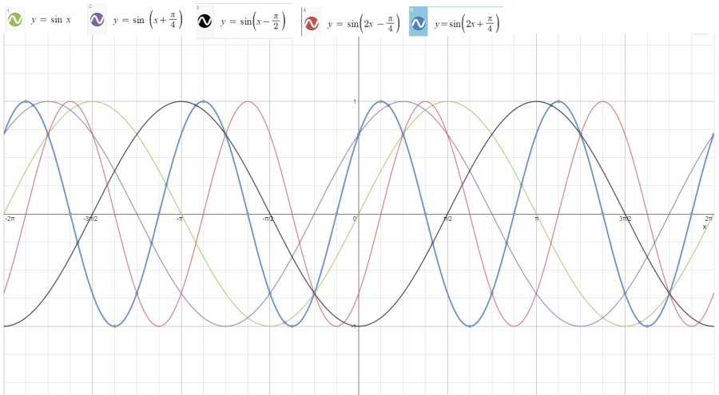
The green plot is the reference comparison:
y = sin x.
It crosses (0, 0).
Look at the purple plot:
y = sin (x + π/4).
The closet point that the purple plot crosses the x-axis (y = 0)
from the origin (0, 0) is at (−π/4, 0).
A table is constructed for the data below
| Plot Color | Function | Point Crossing X-Axis Closest to
Origin (0, 0)
|
|---|
| green
| y = sin x
| (0, 0)
|
| purple
| y = sin (x + π/4)
| (−π/4, 0)
|
| black
| y = sin (x − π/2)
| (π/2, 0) (closest positive x-value)
|
| red
| y = sin (2x − π/4)
| (π/8, 0)
|
| blue
| y = sin (2x + π/4)
| (−π/8, 0)
|
The table shows that the shifting along the x-axis of the sine wave is dependent
on both parameters B and C in the
y = sin (Bx + C) function.
| B | C | x
|
|---|
| 1 | 0 | 0
|
| 1 | π/4 | −π/4
|
| 1 | −π/2 | π/2
|
| 2 | −π/4 | π/8
|
| 2 | π/4 | −π/8
|
The data shows that as B increases, the point where the line
crosses the x-axis gets closer to the origin, so B varies inversely
with the phase shift. When parameter B = 1, then C causes
the offset to shift towards the negative when C is positive, so the
negative of C affects the offset. Additionally as C increases
in magnitude, the offset is equal in magnitude. This shows that the
the offset from (0, 0) is related to −C / B, and this fits the
table data. If B = 1 and C = π/4 then the offset is
−π/4. If B = 2 and C = π/4, then the offset
computes as −π/8, shown to be so in the table. Thus use this formula:
The figure below shows the phase offset re-demonstrated. Although five
plots are shown in the legend, only four actually are seen in the graph.
That's because the green plot, y = sin (x − 2π), is
traced exactly over the red plot, y = sin x. Why? Because the
phase offset for y = sin x = −C/B = −0/1 = 0,
and the phase offset for y = sin (x − 2π) is
−2π/1 = −2π, and these overlap because the period itself is
P = 2π/1 = 2π.
The orange plot has a B = 1 (therefore period is 2π) and
C = π/2. The phase offset is thus −(π/2)/1 = −π/2.
So instead of the first zero point of the period starting at (0, 0) as for
when C = 0, it starts at (−π/2, 0). The positive maximum
deflection is then at point (0, 1), then next zero point is (π/2, 0),
then the negative deflection is at (π, −1) and the last point
at zero for the full period is at (3π/2, 0). This pattern can be extended
to the left and right.
The black plot shows B = 1 (again a period of 2π) and C =
π. The phase offset is then −(π)/1 = −π. Note that
A = 3/2, so the amplitude will be adjusted. The first zero point should
be (−π, 0)
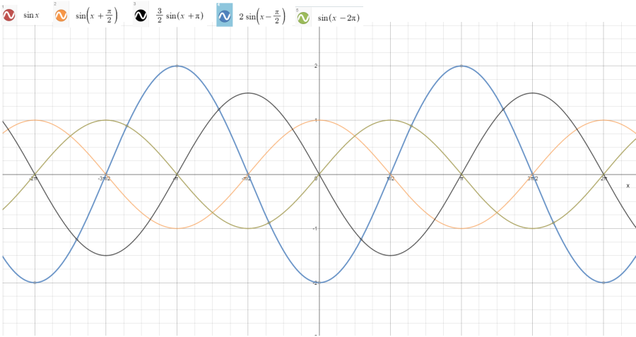
Offset
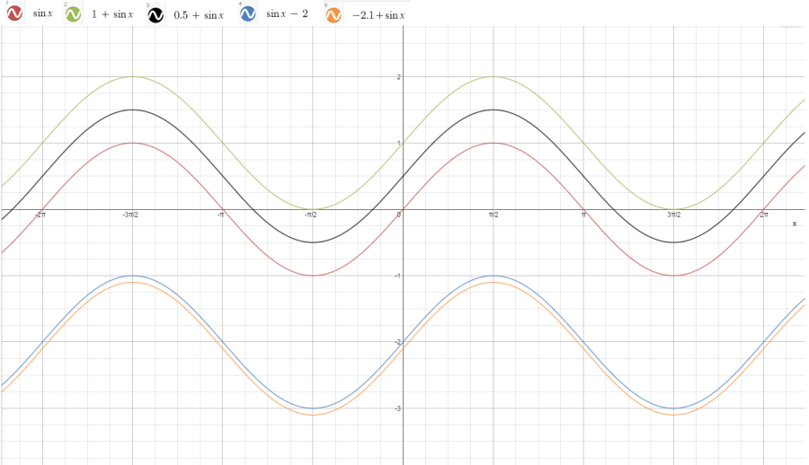
Practice
In this practice, we're going to learn two things:
- how to quickly make a plot from a trigonometric function
- how to look at a sinusoidal (sin or cos) plot and figure out the function
Plotting The Function
In plotting a sine or cosine function, you want to perform the steps below.
We will use the following function as our example in completing the steps
- Get the four parameters. First parse the trigonometric function correctly to get values A,
B, C, and D, because you will use them sketching out
your function. From our example function, we can see that
A = 2, B = 2, C = −π/2, and D = 1.
- Create a table computing five points of oscillation for one period.
You already know that the period is related to B, which is P =
2π / B. In our example, the period is P = 2π / 2 = π.
| Period point
| x-coordinate for Period Point | (x,y) value for
|
|---|
| 0 | 0 | (0, −1)
|
| P/4 | π/4 | (π/4, 1)
|
| P/2 | π/2 | (π/2, 3)
|
| 3P/4 | 3π/4 | (3π/4, 1)
|
| P | π | (π, -1)
|
Getting The Function From Looking At The Plot
Follow these steps in looking at a plot of a sinusoidal oscillating function
to determine the sine or cosine function. In following these steps, the figure
below will be examined, which has two functions to be determined, black
and purple.
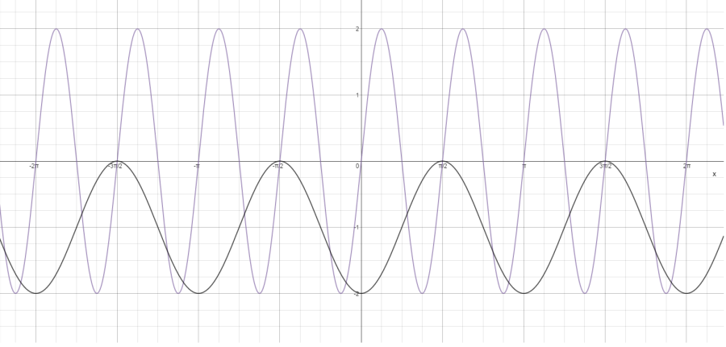
- Determine value D, which is the y value of the axis
of oscillation.. The black plot oscillates about −2 ≤ y 0.
If we compute the midpoint of these maximum deviations, it is y =
−1. Therefore D = −1. For the purple plot, it is clear
that it oscillates from −2 ≤ y +2, and the midpoint is
y = 0. Therefore D = 0.
- Determine the period, which gets value B.
purple:
black:
Graphing tan, cot, csc, and sec Functions
Take a look at the figure below, which shows plots in the format
, where B is varied and
B should already be understood to refer to the period of a plotted trigonometric
function in the case of sinusoidal functions.
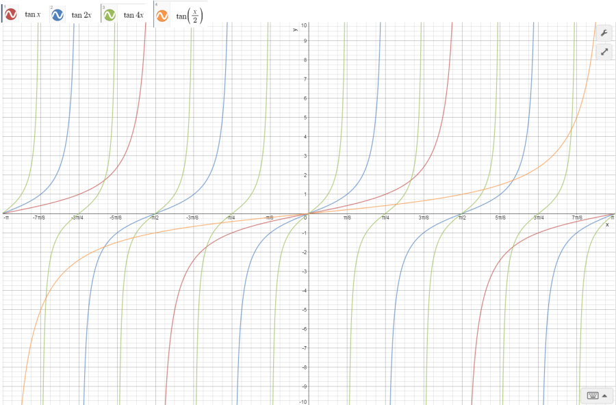
Note that the basic
y = tan
x function (the red plot below) is not a periodic sinusoidal wave like the
sine and cosine functions. Here are the things to notice about the
characteristics of a tangent function:
- Unlike sine and cosine functions, the domain is restricted along values
corresponding to the period. That means that certain x values are undefined,
and they are undefined for all x when cos x = 0. The explanation
is simple: since ,
any zero value in the denominator is undefined.
- The period of is
, unlike sin and cos functions,
where it is . This has been shown in text above.
- Whereas the range of and is limited to oscillating from −A ≤
y ≤ A, the range for tangent is .
- The roots of , that is the point where y = 0, or where the plot crosses
the x-axis, are the same value for ,
since it is the numerator value for : when sin x is zero, so is tan x.
So for ,
the period is π because B = 1, and so . The undefined x values are when
, and that
is true for
, or basically for all odd integers of n negative and positive.
Note that the interval has a period length
of π.
For
(the blue plot), the period is now , and the undefined x values are
,
which will be true for for all odd n. The roots are
for values of x when , which should be true for for all n.
For the other tan functions shown, plot graphings show the period increases
when B decreases, and decreases when B increases, which is expected.
In the figure below, the cotangent functions are compared to the tangent functions.
Whereas the asymptote values for
are when ,
for , they
are , since
. Note also that the two functions intersect at all
values for
and at
for
The negatives of the tangent and cotangent functions are the reflections about
their single root (y = 0) values, so looks like the cotangent function but with an offset of π/2.
The negative cotangent function graphs like the tangent, but again with an
offset and reflection about y = 0 (root).
The secant and cosecant functions (solid red and blue plot lines) are graphed
against the sine and cosine functions (dashed green and purple plot lines).
The
function intersects its inverse sine function at 1 and −1, and the
intersects its inverse cosine also at 1 and −1. These intersections
are at the maximum deviation (amplitude) whether y < 0 or
y > 0. In fact, the parabolic contact for csc x and sec x
will be at A or −A for the form
or
The asymptotes (undefined x values or domain restrictions) are wherever
for
csc x, and wherever for
. This is because they are the
inverse of the sine and cosine functions, and 1 / sin x and 1 / cos x are
undefined for 1 / 0.
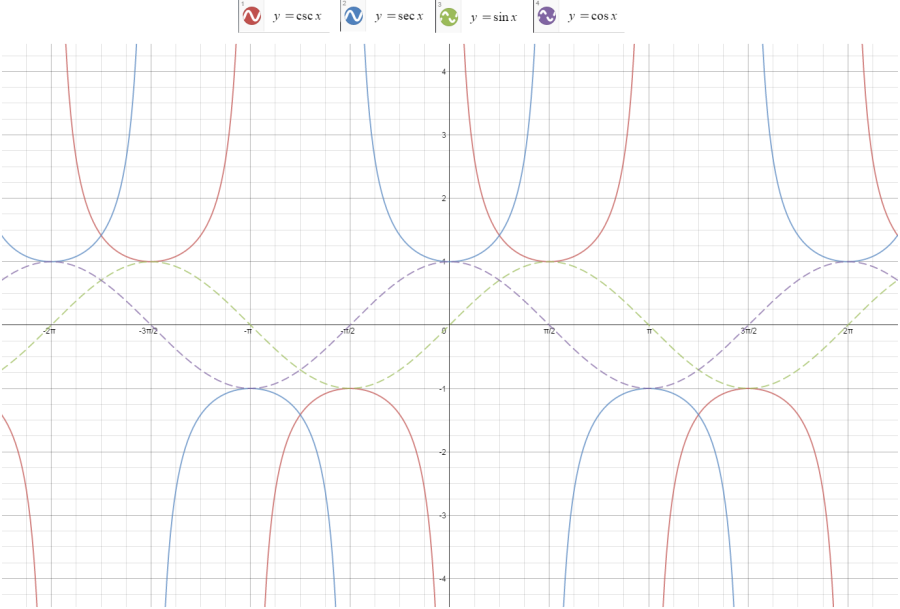
Trigonometric Identities
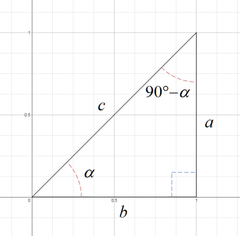
One of the more basic identitities is a relationship of sine to cosine.
The figure at left shows a right triangle with an angle α. It must be
true that the other acute angle is 90 − α, since a triangle has
180°, and a right triangle has one 90° angle (the right angle), and
so if there is a right angle and an angle α, the remaining third angle is
If and it is also true that , then the following
relationship is true:
It can also shown that
by same deductive process. In many cases, radians and not degrees will be shown,
so is equivalent to
The identities for any right triangle are summarized below:
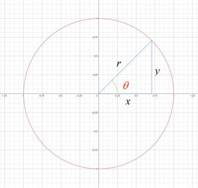
A unit circle (a circle with radius = 1) is shown in the figure at right.
The following equations are all true and already learned from trigonometric
principles:
-
The values for
x and
y in equations 2 and 3 are substituted in
equation 1:
A very important trigonometric identity has now been derived, usually expressed
as:
Trigonometric Functions of the Sums and Differences of Angles
The following identities should be committed to memory, but fortunately there
is a way to verify how good memory is:
Those four equations burn into the eyes, but there is a some what easy way to
remember them:
- For the sine function sum and difference (first two), remember that
- the two terms are
sin cos
- when it's the plus sign (+), the operator on the two terms is also plus (+)
- when it's the minus sign (−), the operator on the two terms is also
minus (−)
- For the cosine function sum and difference (last two), remember that
- the first term is
cos cos
and the second term is sin sin
- when it's the plus sign (+), the operator on the two terms is minus (−)
(the opposite of a sine of sum/difference)
- when it's the minus sign (−), the operator on the two terms is plus (+)
In all cases, write the angles as (sin/cos)α(sin/cos)β
as products for each of the two terms.
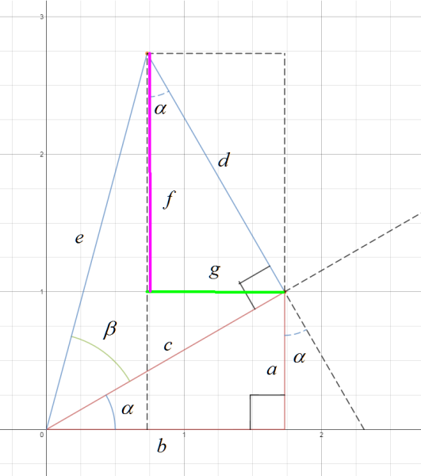
Now a proof is shown for these equations.
Look at the figure on the left. This is how it was constructred:
- A red right triangle was first constructed and its three sides are labeled
a, b, and c, where c is the hypotenuse and angle
α is formed between side b and hypotenuse c. Side b
forms along the x-axis.
- A blue right triangle is then formed such that the right angle is along
side c with side d and hypotenuse e. Note that the
hypotenuse of red triangle is a side of the blue triangle. Angle β is formed
between side c and hypotenuse e.
- A dashed black line is drawn between the point there sides d and
e meet down to the x-axis. Using the postulates of geometry involves
vertical and corresponding angles of lines, it can be shown that the angle
between side d and the dashed black line is also α
- Line segments f (thick magenta line) and g (thick green line)
can form another right triangle within these two constructed triangles.
Proof for sin(α + β). From the figure,
The following is true to substitute for f and a:
Sides c and d have a relationship with hypotenuse e using
angle β: